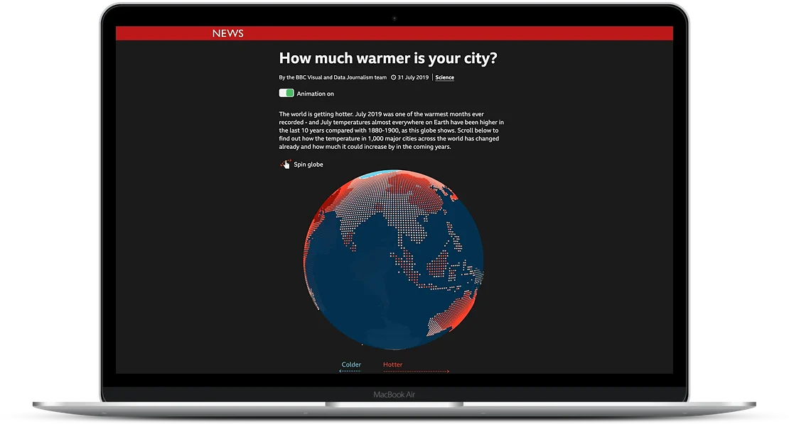
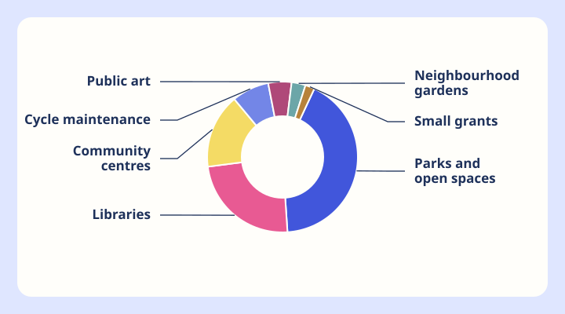
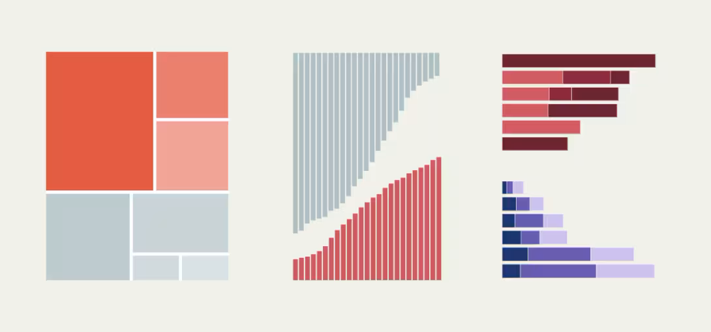
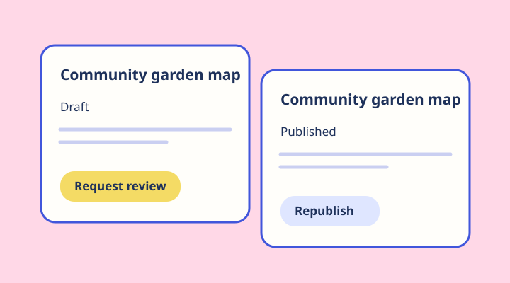

BBC News
How much warmer is your city?
An interactive BBC News story that made climate change feel local by showing how temperatures had shifted in cities around the world.
Read the case studyI build interactive data stories and tools that make complex things easier to see, understand and use.
See selected workA LITTLE ABOUT ME
I’m Becky, a software engineer working across data visualisation, product engineering and accessibility. I work with designers, product teams and journalists to understand the problem, build the experience and get it into people’s hands.
I’ve spent the last decade making interactive journalism at BBC News and data visualisation tools at Flourish, now part of Canva.
A bit more about meSELECTED CASE STUDIES

BBC News
An interactive BBC News story that made climate change feel local by showing how temperatures had shifted in cities around the world.
Read the case study
Flourish
I led the design and engineering of external labels for Flourish pie and donut charts, working with product designers on how labels behave when space is tight.
Read the case study
Global Energy Monitor
I used the Flourish API to connect multiple visualisations so readers could explore energy infrastructure using shared filters.
Read the case study
Flourish
I co-built a publishing and export interface that handles approvals, export restrictions and embed settings.
Read the case studyAt Flourish I led accessibility remediation across the visualisation template library, coordinating the response to an external audit and shipping improvements for keyboard, screen-reader and touch users.
Explore my accessibility workMORE TO EXPLORE
Side projects, published stories and speaking about accessible visual storytelling.
OUTSIDE THE CASE STUDIES
SAY HELLO
I’m always happy to talk about data, accessibility, visual storytelling, and the best gig you’ve been to lately.
Find me on LinkedIn